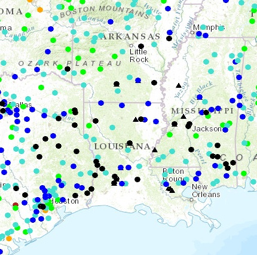

Maureen Thiessen's Maps
View Weather Data, XYZ Data, and XYZ Data using the following three maps. These maps were created for the WebGIS Midterm Assignemnt.

Stream Levels
Powered by ArcGIS,
see current stream levels and Louisiana flood gauges.

Water Quality
Powered by GoogleMaps,
Sensitive watersheds and latest water quality data in Wake County, NC.